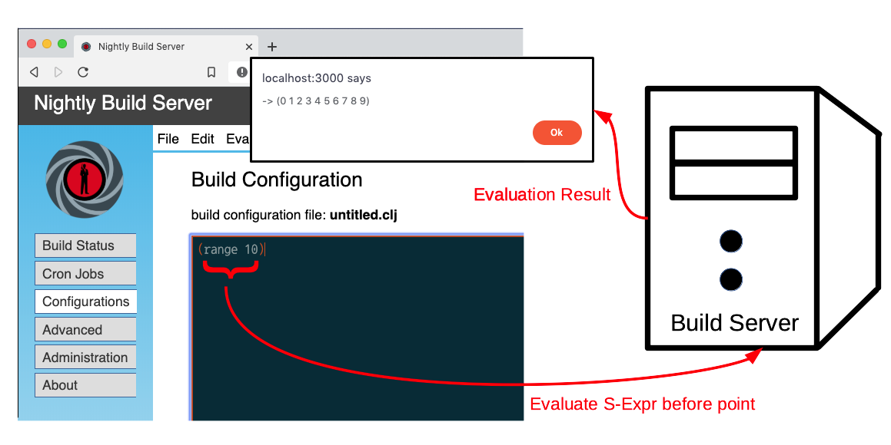

Using the Online REPL
What is a REPL?
The abbreviation REPL stands for Read–eval–print loop and is basically a shell for programming languages of the Lisp language group (Lisp, Scheme, Clojure). It Reads sybmolic expressions which are entered within a terminal, Evaluates them and finally Prints the resuslt within a Loop. From an user's perspective, these languages can be seen as interpretive programming languages. Technically the compiler (reader) is part of the Clojure runtime environment so like in other Lisp dialects there is no runtime penality due to parsing.
The REPL is incredible powerful and the essential tool of all Lisp programming environments. Many different protocols exist which differ essentially in the used terminal interface. The most straightforward approach is to use the standard input output of the local terminal. Instead of directly using standard I/O such a REPL can be connected to a TCP socket (socket repl). A more advanced approach is to use a dedicated network protocol (nREPL) which allows the transmission of additional information e.g. for debugging, information about currently enabled namespaces, etc. The latter one is mostly used by Integrated Development Environments e.g. Eclipse with the Counterclockwise plugin, IntelliJ with the Cursive extension or Emacs with Cider. Programming environments based on nREPL are the recommended approach when it comes to serious Clojure programming.
However, we understand that all of these tools are complex. The installation and becoming familiar with them means usually significant effort. To make the start easier we provide an online programming environment which does not require any special tools except a modern web browser.
How the Online REPL Works
Bond comes with an integrated Clojure editor which supports syntax higlighting, rainbow delimiters and paredit. These editor plugins are typically used by Lisp/Clojure programmers. Please note that the Online REPL does not support the complete featureset of these plugins. Furthermore, the longer the program text to be edited becomes, the slower the editor reacts due to the restricted performance of Javascript engines. It is therefore recommended to use an dedicated IDE editor such as Counterclockwise, Cursive or Emacs together with an external REPL for more serious projects. This approach is discussed in the next section. The Online Editor is more or less restricted to be practicallly used for small changes and the first steps only.
The editor panel within the configurations tab in browser is always linked to the workspace server.config on the build control server. Whenever an S-expression is evaluated by clicking the menu Evaluate S-Expression before point or simply pressing Command-E (or CRTL-E on the Mac), the S-Expression, that is the preceding list encapsulated by parenthesis, is sent to the server and evaluated there. The server sends the result of the evaluation or an error message back to browser afterwords where it is displayed within a popup dialog window. The approach is illustrated below in figure 1.
|  |
Note that the build server which is executing the Bond Nightly Release Control Server and illustrated in figure 1 does not necessary do the actual build. Since all build operations are controlled via a ssh, we have at least the following computation environments involved in an actual build:
- Build Machine or Container
- The system where the source is actually compiled.
- The Bond Build Control Server
- System which runs the backend of the build control software.
- The Web browser and/or N-Repl Client
- System which is used to remote control Bond.
- Source Code Managemengt Server
- These days mostly a public or private git server such e.g. Github or Gitlab.
All of these systems can be executed on different hosts.
What are Build Configurations?
A sequence of shell commands also known as build sequence and an associated set of parameters constitute a so called build description. Both are embedded into Clojure code. The build sequence can be reused with another parameter set in order to declare different build flavors which could be required e.g. to generate builds for development purposes, special target hardware configurations and so on. Multiple build descriptions which are explained in more detail within the next section can be stored within a single file under the Clojure namespace server.config. Such a file is typically referred to as build configuration. Only one build configuration can be active at a given time. By convention all build configurations are stored within the directory build-descriptions under the home directory of the user which has started the bond server. When bond is started the first time and this directory does not exist, it is automatically created and some sample files are copied to it.
The file menu offeres several functions to load, save and activate a configuration from the server's build-description directory. Note that a build configuration is not automatically activated when loaded by selecting another configuration from the list of available configurations which is shown after clicking File->load. Instead it is exclusively loaded to the browsers configuration editor pane. This allows to inspect a different build configuration without triggering any change on the server. When the web page is reloaded or simply by clicking File->revert the currently activated configuration is loaded to the editor pane. The same behavior applies when File->new is selected. Only when Activate Current Configuration is triggered from menu File, the currently displayed build configuration file is loaded to the server. Note, that when the content of the active configuration has been changed within the online editor, this change must transferred to server first by selecting the menu entry Save from the pull down menu File. Otherwise the content which is stored on the server is used. Use the menu Save as ... to create a new configuration by saving the contents of the configuration editor pane to the specified file name. Note that variable definitions in namespace server.config remain valid unless they are overwritten or the server is restarted.
Editing Clojure Code
On contrast of the more widespread programming languages of the Algol respectively C language group, Clojure code comes with more parenthesis because code and data is epxressed with the same syntax list notation. With larger functions this can create some difficulties especially for newcomers to the Lisp respectily Clojure. Typical Lisp editors try to overcome this by providing dedicated editor modes such as rainbow delimiters and paredit. These make it easier to deal with consequtive paranthesis by associating each parenthesis pair a different color. Furthermore when the open-parenthesis-character '(' is entered, the editor will automatically create a matching close-paenthesis-character ')'. The same rule applies for squared and curly brackets.
Bond integrates both modes to certain degree as well.In the beginning it may take some getting used to but the benifit of not having to deal with missing or wrongly associated paranthesis mostly pays off. To try out clear the editor pane and enter try enter the following expression:
(list 1 2 3)
As soon as you hit the '(' key, the associated ')' character is automatically typed and the cursor is placed between them. You can now continue typing the word 'list' followed by blank and the digit characters.
Now assume that we want to put the first digits into a vector and use it as first element in the given list so that we get the S-expression:
:(list [1 2 3])
In order to alter the already exterend list S-expression accoringly, place the cursor before the character '1' and enter the character '['. This will create a pair of squared brackets:
(list []1 2 3)
You can now shift the closing squared bracket to include the next element by selecting the function Forward Slurp S-Expression or just pressing C-) where C denotes the control key and ')' corresponds to the key combination to enter the closing paranthesis character. On an English keyboard this corrsponds to the keys shift-0. Note that the command key depends on which Operating System is used to run you webbrowser. On Windows it might be the ALT key while on Macintosh and some Linux distros it might be associated with the control key. These differences exist because the main modifier key is already bound to browser functions so we have to use the alternative modifier key and operating systems differ in terms of the key layout used for main and alternative control modifier keys. Whenever Forward Slurp S-Expression is triggered, the closing rectangular bracket is forwarded one element to the right as illustrated in the following:
(list [1] 2 3)
(list [1 2] 3)
(list [1 2 3])
In order to reverse the last operation of and remove the elements from the vector just place the cursor at a location inside the vector and select Split S-Expr from the pulldown menu Edit. Alternatively you can enter the key combination C-s.
Excerise these functions a little bit. We hope to be able to illustrate the benefits of these editor modules and convince you to install these to your favorite IDE/Editor as well. These should greatly simplify the editing of Lisp/Clojure code.
The Clipboard
The clipboard in bond works diffently than in other editors. In order to avoid that parenthesis and bracket levels get unballanced, we have restricted the clipboard operationg to operate just on one S-expression exclusively. We believe that for the given purpose this restriction is acceptable because a one build configuration is usually consisted out of two S-expressions only. When it comes to more serious development tasks it is recommended that you use your favorite IDE or editing environemnt anyway. Refer to the the section Connecting an External REPL for more detailed information how to do this.
Online Evaluation of Clojure Code
Bond comes with allows to evaluate Clojure S-expressions directly from the configuration editor pane. In order to evaluate a single S-expression place the cursor to the right of the closing parenthesis and select the menu Evaluate S-Expr before point from the pulldown menu Evaluate. In example when with the following S-expression:
(reduce + (range 10))
the evalution result 45 is displayed in a popup dialog window. Note that a single S-Expressions is always evaluated within the name space server.config which is used by bond for the declaration of build descriptions.
The menu function Evaluate All Expression evalates the complete content of the build configuration editor pane which is typically associated with a build configuration file. Because these files shall always declare the name space server.config in the header, there is no further name space selection respectively restriction. So it is possible but not recommended to inject conde into another name space.